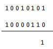
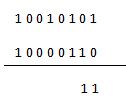
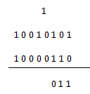
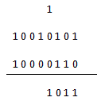
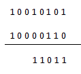
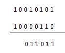
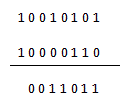
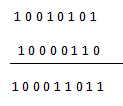

Addition, subtraction, multiplication and division are the four types of operation on which all the arithmetic operation depends of decimal number system, similarly these are the pillars of binary arithmetic also. The first and perhaps the most important of them all is binary addition and it is the easiest of them all also.
Now coming to the method of addition, there are four points or steps to remember before proceeding through the operation. These are
0 + 0 = 0
0 + 1 = 1
1 + 0 = 1
1 + 1 = 0 (carry 1 to the next significant bit)
As there no numbers other than 0 & 1 in the binary number system these four steps include all the possible operations of addition.
Now let us explain the operation through an example
Suppose A = 10010101 and B = 10000110
Now we want to find out A + B i.e. we have to perform binary addition, we will look through the process with thorough explanation.

This is the addition of the first two least significant digits which are 0 & 1 and 1 + 0 = 1 which is written.

Here again the similar step is done i.e. 0 + 1 = 1.

Here 1 + 1 = 0 and the carry is written on the top of the next significant bit which will be used in the next step.

As we know 0 + 0 = 0 and 1 + 0 = 1 (1 comes from the carry) and the result 1 is written.

Again 1 + 0 = 1 and that is exactly what is written.

The next two bits which are to beaded are 0 & 0 and 0 + 0 = 0.

Again the same operation 0 + 0 = 0 is done and written.

The last two bits include 1 + 1 = 0 and carry 1 which is written directly in the result.
The use of binary addition in the digital electronics field can be seen clearly, we have discussed about the logic gates which are perhaps the most important part of digital electronics are nothing but the binary arithmetic operations, the XOR gate is the pure binary addition.
 by
by